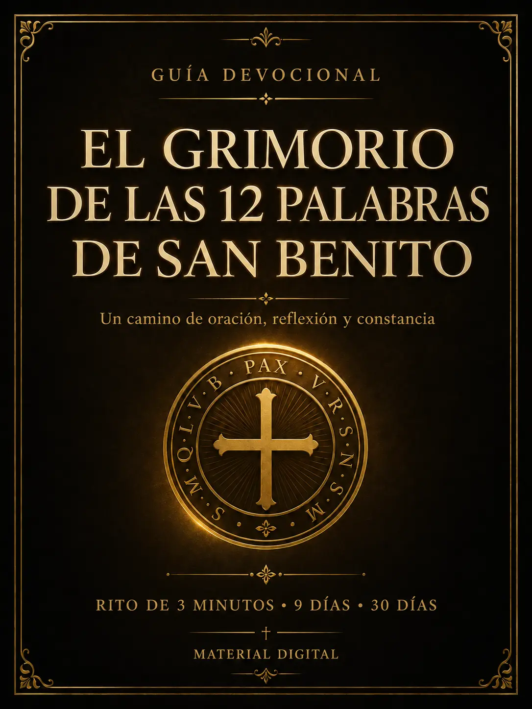
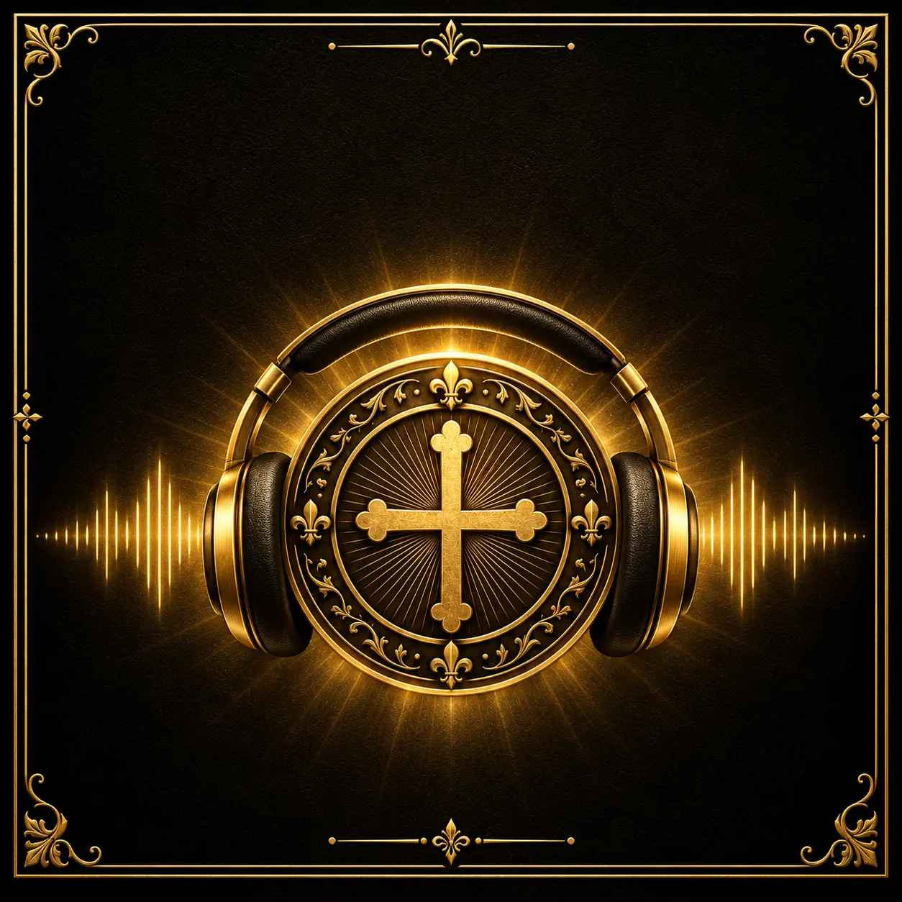

Haz una pausa
Respira, silencia el ruido y presenta con sinceridad lo que llevas en el corazón.
Edición Latinoamérica · Letra ampliada
Una jornada devocional de 9 días para rezar con más presencia, dirección y constancia, incluso si hoy no sabes por dónde comenzar.
Compra segura · Recíbelo directamente en tu correo

Una práctica posible para la vida real
No necesitas una hora libre ni conocer oraciones difíciles. Esta guía te acompaña paso a paso para hacer una pausa, presentar tu intención y dedicar tres minutos a una oración con propósito.
No es magia ni superstición. Es una rutina de oración, reflexión y constancia inspirada en la tradición devocional de San Benito.
El rito de los 3 minutos
Cada práctica tiene una estructura clara. Abres la guía, sigues los tres momentos y terminas con una intención concreta para tu día.
Respira, silencia el ruido y presenta con sinceridad lo que llevas en el corazón.
Lee la oración del día lentamente, con atención y sin apresurarte.
Registra tu reflexión y elige una acción responsable para vivir lo que rezaste.
Todo en una sola guía
Una edición premium pensada para acompañarte desde la primera oración hasta la construcción de un hábito espiritual constante.
Una oración y una reflexión para cada palabra.
Un recorrido organizado para no perderte ni abandonar.
Hogar, familia, trabajo, decisiones, paz y protección.
Espacios para anotar intenciones, señales de luz y próximos pasos.
Más comodidad para leer en el teléfono, tableta o computador.
01 Preparación y orientación
02 Las 12 palabras y sus oraciones
03 Jornada devocional de 9 días
04 Oraciones por ocasión
05 Cuaderno espiritual de 30 días
Un propósito para cada día
Avanza a tu ritmo y repite la jornada siempre que necesites recuperar presencia y constancia.
Esta guía es para ti si…
✦ Quieres fortalecer tu constancia espiritual sin rutinas complicadas.
✦ Necesitas una oración para momentos concretos de la vida.
✦ Prefieres textos grandes, organizados y fáciles de acompañar.
✦ Deseas comenzar con pocos minutos y avanzar paso a paso.

Complemento opcional
En el checkout podrás añadir la edición en audio de esta guía devocional para acompañar tus momentos de oración sin depender de la lectura.
Disponible por separado en el checkoutEmpieza hoy
Material 100% digital. Después de confirmar tu compra, recibirás las instrucciones de acceso directamente en tu correo.
✓ Guía devocional premium de 97 páginas
✓ 12 oraciones, una para cada palabra
✓ Rito de 3 minutos y jornada de 9 días
✓ Oraciones por ocasión
✓ Cuaderno devocional de 30 días
Tu compra está protegida
Tendrás 7 días para acceder al material y conocer la propuesta. Si dentro de ese plazo decides que no es para ti, podrás solicitar el reembolso de acuerdo con las condiciones de la plataforma de pago.
Preguntas frecuentes
Todo lo esencial sobre tu acceso y la forma de usar la guía.
Es un material digital en PDF. No se envía ningún libro físico.
Sí. La edición utiliza letra ampliada y una estructura clara para facilitar la lectura en teléfono, tableta o computador.
El rito central fue diseñado para realizarse en aproximadamente 3 minutos. Puedes dedicar más tiempo a las reflexiones y anotaciones si lo deseas.
No. La edición en audio es un complemento opcional que podrás añadir por separado durante el checkout.
No. Es un material devocional y educativo basado en oración, reflexión y responsabilidad. No ofrece garantías de resultados espirituales, personales o financieros.
Después de la confirmación del pago, recibirás las instrucciones de acceso en el correo utilizado durante la compra.
Tres minutos pueden abrir un nuevo momento en tu día
Una palabra, una oración y un propósito cada día.
Quiero comenzar ahora Acceso completo por US$ 7,90